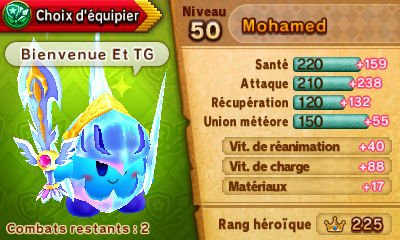
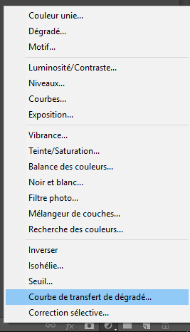
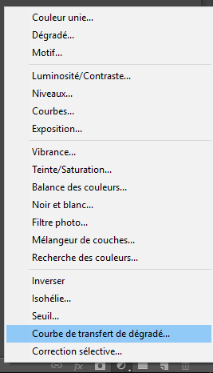
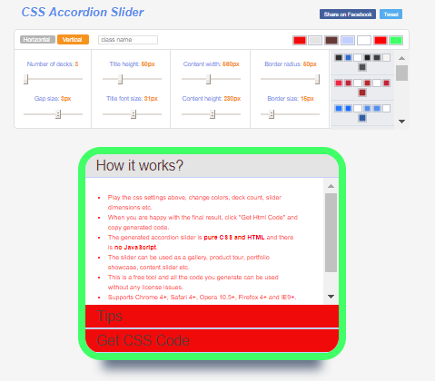
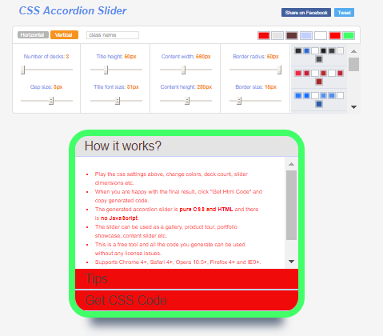
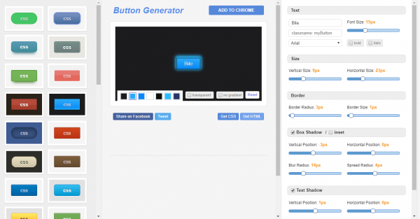
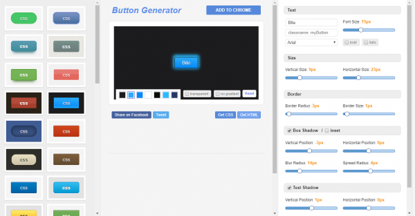
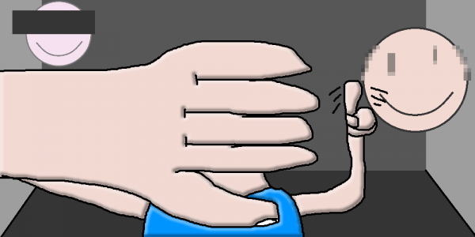

![[ANA JDG] Asterix and the Great Rescue - Megadrive](../vi/6oUXi0ckLmA/default.jpg)
![[ Présentation pour la chaîne Grenier des Joueurs ] JDG Prod](../art/SHAR.6419.583.2.jpg)



Sachez que cet article est rédiger sur ma Nintendo New3DS avec la version mobile d'édition d'article de Skyrock donc n'espérer pas trop de liens ou de plus d'image CAR IL N'Y EN AURA PAS!
Après la fin de Miiverse, les moyens pour poster nos screenshots (captures d'écrans) ont bien changer car désormais tout n'est plus aussi facile!
Soit on emploi un site de gallerie qui possède une version épurée mobile avec un bouton en balise ‹submit›,
Soit on passe par un ordinateur pour récupérer le contenu de la carte SD/MicroSD!
Je me permet de vous signaler que Twitter n'a pas installer de bouton ‹submit› dans version mobile et que Facebook n'est pas publique ET DONC C'EST DE LA MERDE CAR LE WEB EST CENSÉ ÊTRE PUBLIQUE COMME UN ENSEMBLE DE BARS,MAGASINS,CINEMAS,RESTAURANTS,... comme une place de village quoi!
Bon...je me calme et vous recommande de faire votre propre site...
Voici quand même une recherche de sites où on peut poster nos ss (screenshots):
https://www.google.be/search?q=hebergeur+image+sans+inscription&client=ds&dcr=0&oq=hebergeur+image+sans&gs_l=heirloom-hp.1.0.0j0i22i30l3.3276.4576.0.5502.4.4.0.0.0.0.159.440.2j2.4.0....0...1ac.1j4.34.heirloom-hp..0.4.438.NH-M1PEsupc
(OUI,c'est un lien et ça doit faire 1h que je cherche comment faire de la mise en page sur ma New3DS mais on a autant de fonctionnalité de mise en page que sur Twitter ou Windows Bloc-Note en mode mobile sur Skyrock...c'est triste et j'en suis malade!)
J'ai appris que HostingPics.Net ferme, allez récupérer vos images dans vos galleries, il ne reste que quelques semaines!
KidpaddleetcieGlin;Le gars qui a tenté de faire un beau article de blog sur une New3DS!
KidpaddleetcieGlin
Description :
Le Blog d'une personne aillant découvert internet en 2007 qui partage une partie de sa vie mais surtout ses réflexions, ses découvertes et ses cours!
Bon, je ne vous garantit pas que 100% du contenu est fiable mais aux moins je l'approuve! :)
N'oubliez pas de me retrouver sur les autres sites internet du réseaux KidpaddleetcieGlin retrouvable dans le premier article de chaque page. ^-^
Bon, je ne vous garantit pas que 100% du contenu est fiable mais aux moins je l'approuve! :)
N'oubliez pas de me retrouver sur les autres sites internet du réseaux KidpaddleetcieGlin retrouvable dans le premier article de chaque page. ^-^
Je bosse actuellement pour la chaîne Grenier des Joueurs
Son morceau préféré
Retour au blog de KidpaddleetcieGlin
Introduction
Pas besoin de faire un site web (même si c'est l'idéal si on produit du contenu varié de manière massive) car il existe des sites web ayant des lecteurs
et des fonctionnalités plus aboutit qu'une simple balise ou!
Dans cette vidéo, je vais vous faire la présentation de divers sites web que j'emplois même si j'avoue que chaque site web possède des fonctionnalités différentes et qu'il faut en essayer un maximum pour être certain de posséder le plein pouvoir sur ses contenus!
Pour le texte
Avant de faire des grosses productions, on doit passer par le texte pour s'organiser et créer les premières dynamiques! Dans l'idéal, il faut pouvoir souligner, mettre en couleur, mettre en surbrillance et pouvoir mettre quelques images/vidéos d'exemple pour accompagner le texte!
Je vous conseille de créer un Blog Skyrock si c'est pour faire suivre un projet, mettre l'ensemble du texte de votre vidéo ou votre chanson,...
Je vous conseille Wattpad si c'est pour raconter des histoires avec une structure par chapitre! (ATTENTION,IL FAUT ÊTRE MEMBRE POUR LIRE VOS HISTOIRES!)
Pour vos images
Quand on fait de l'illustration ou juste des rendus 3D, on a besoin d'un moyen de poster ses images à la vue de tout le monde pour alimenter la visibilité d'un projet comme une BD, un court-métrage,un dessin-animé ou encore une vidéo présentative!
Je vous conseille DeviantArt pour son coté « communautaire » et surtout sa gestion de l'organisation qui fonctionne comme votre PC sauf qu'un même contenu peut appartenir à plusieurs dossiers et possède plusieurs mots-clés!
Sinon, il y a Memecenter mais c'est surtout si vous faîtes des parodies d'image en anglais...des Mèmes donc (ça tombe sous le sens)!
Pour la musique
Quand on créé des court-métrages et qu'on est un pro, on créé son identité musicale! On peut aussi créé le jingle de son émission ou juste la musique du générique mais...on a des fois marres des
« c'est quoi la musique à 0:17 ? » donc il faut donner au bas-peuple majoritaire ce qu'ils demandent pour éviter de finir la tête sur une pique!
Je vous recommande Soundcloud pour la gratuité et l'accessibilité si vous ne faîtes pas trop de musique car il y a une limite de 3h pour la gratuité!
Pour la 3D
Des fois, on est fier d'avoir terminer son personnage dans 3DSmax, Maya, Blender ou encore Cinema4D mais on a envie de l'offrir aux mirettes de notre publique...et pourquoi pas lui permettre de s'en emparé gratuitement ou pas...hé hé hé !
Je vous recommande Sketchfab qui est gratuit (sauf si vous voulez poster de manière Privé vos modèles 3D) et assez complet! On peut même utiliser un plugin pour uploader depuis le logiciel de 3D notre modèle 3D avec ses textures et ses animations! C'EST TROP BIEN =D
Pour les vidéos
Quand on a un smartphone depuis tout petit à cause de parent irresponsable et une incommensurable capacité à faire chier le monde le monde, on aimerait bien poster son podcast sur les différents types de profs sur un site web pour se la péter dans la cours de récré le lendemain avant qu'un camarade te montre que t'es une petite merde parce qu'il maîtrise After Effect et qu'il a des amis pour tenir la caméra contrairement à toi...petite merde!
Je recommande YouTube...à défaut de mieux car Dailymotion n'a plus d'espace « commentaire » et Facebook est encore plus chiant sur les droits d'auteurs tandis que Vimeo n'est pas vraiment gratuit!
Il y a l'alternative pewtube.com qui existe mais c'est pas encore aussi bien organisé que Dailymotion ou YouTube! (En plus,c'est moche!)
![[Comment?]Survivre sur le web créatif?](../5252/79895252/pics/3309760678_1_3_f7iL1DhA.png)
Le Web est un lieu où tout le monde peut se rencontrer et créer des projets seuls ou en groupes! Dans un milieu aussi fécond, il se peut que certains veulent en faire partit sans respecter son prochain!
Mes conseils se basent énormément sur la notion du pardon mais aussi de la tolérance des mots et des faits! Le Web n'étant pas un lieux de consommation où tout le monde est payé, tout le monde ne doit pas être mis dans le même panier!
De toutes façons, si tout le monde était payer sur le Web, tout le monde serait en déficit car on consomme plus que ce qu'on produit! On importe plus que ce qu'on exporte!
Voici les conseils:
1.Créditez en n'oubliant pas de mettre un lien dans la description de vos contenus où se trouvent des ½uvres de tiers! Si une description n'est pas présente, faîtes un QRcode au sein du contenu visuel ou faîtes un remerciement dans le contenu audio!
2. Ayez un maximum de créateurs autour de vous dans des domaines variés, suivez-les mais surtout soyez franc avec eux pour devenir un collaborateur ou une bonne aide en cas de pépin créatif!
3.Restez intéressé par l'ensemble des domaines de créations et essayez des logiciels gratuit ou pas...
4.Privilégiez le domaine publique au domaine privé afin de gagner en visibilité et donc obtenir votre dose de reconnaissance sociale et une communauté!
5.Apprenez les codes de la communauté dont vous faîtes partis afin de les mêler à ceux des autres! Sachez réunir les gens de manière créatif et intelligente par les termes ou les gimmicks!
6.Rester franc face à votre public MAIS ne révéler rien d'extrêmement privé, le Web ne doit rien savoir de vos soucis intimes et familiales! Ce sont les rôles des psychologues et des médecins ça!
7. Soyez présent sur plusieurs sites de ressources afin d'obtenir un liberté d'exposition accrût et d'offrir une liberté d'accès à vos ½uvres à tout le monde! Ne soyez pas timide et soyez digne représentant de vos capacités!
8.NE METTEZ PAS VOTRE VRAI NOM ET PRÉNOM SUR LE WEB SI VOUS N'AVEZ PAS DE CONTENU RENTABLE!!! Préférez un pseudonyme avec son histoire qui vous définit bien!
9.Privilégiez la quantité à la qualité au début afin de gagner vite de l'intérêt et un petit salaire afin de pouvoir être sur d'avoir de l'audimat lorsque vous commencerez à sortir du contenu de qualité comme des courts-métrages ou vos clips de musiques!
10. Faîtes-vous remarquer par la collaboration et les "buzz" des autres! Un bon coup de piston doit quand même être accompagné à une amélioration de la qualité de vos ½uvres! Profitez des autres mais faîtes en sorte qu'ils puissent aussi profitez de vous! Tout le monde doit se retrouver dans l'histoire!
Voila, vous pouvez désormais sur-vivre dans le Web Créatif sans craindre de représailles sanglantes ou pertes de morale face à votre carence de mise en avant!
KidpaddleetcieGlin
Comment colorier comme un boss et faire les effets de lumière-ombres sur Photoshop sans utiliser une méthode destructrice de merde qui vous amènera à penser au suicide lorsque votre client demandera la moindre retouche ?
C'est simple en 14 étapes :
Etape 1 : Importer votre dessin en noir et blanc sur Photoshop et utiliser l'outil
« Courbe de transfert de dégradé » (ce sera le nom du calque)
pour ajuster les noirs et blancs !Vous trouverez cet outil dans l'icône ronde qui se trouve en bas de l'onglet des calques ! N'oubliez pas de nommer le calque de votre dessin «Traits»!
Etape 2: Relier votre calque de réglage «Courbe de transfert de dégradé» avec Alt-Clique sur le segment entre le calque du dessin et le calque de réglage!
Ainsi, vous n'auriez aucun problème à remplacer l'effet plus tard et, surtout, ne pas l'avoir dans les pattes lorsque vous allez faire les autres calques!
Etape 3: Mettez le calque du dessin en mode «produit» afin de n'avoir plus que le noir qui sera visible sur l'ensemble de l'image...ce qui veut dire que vous devez
faire les claques ultérieurs en-dessous!
![[Comment?]Colorier comme un boss sur Photoshop!](../5252/79895252/pics/3309716112_1_7_TYoPDYDO.png)
Etape 4: Faîtes un calque «aplat de couleur PERSOS» où vous allez colorier avec l'outil «crayon» votre personnage, l'idée de laisser toutes les
couleurs sur un seul et même calque afin de ne pas surcharger le fichier Photoshop et aussi de ne pas chercher pendant une heure où se trouve
la couleur d'un élément du personnage!
JE PRÉCISE QUE CE SONT JUSTE LES COULEURS DU PERSONNAGE, PAS DU DÉCOR QU'IL FAUT FAIRE !!! ET JE REPRÉCISE AUSSI QUE LE CRAYON DOIT ÊTRE UTILISER ! >:( Grrrrrr
Etape 5 : Faîtes un calque « ombres persos » au-dessus de votre calque « aplat de couleur Persos » que vous mettez en mode « produit ».
N'UTILISER PAS DU NOIR OU DU GRIS POUR VOS OMBRES !!! C'EST DÉGUEULASSE ! Prenez plutôt une couleur pâle pour faire les ombres du personnage !
Etape 6 : Une fois les ombres faites, faîtes les lumières grâce à un nouveau calque nommé « Lumières Persos » que vous mettez en mode « Lumière Crue ».
Vous pouvez employer la même couleur que pour vos ombres vus que le mode va éclaircir plutôt qu'assombrir !
Etape 7 : Une fois vos lumières faîtes, il est temps de mettre un calque de fond ! Faîtes juste un calque en-dessous de tous vos calques que vous nommerez « Fond Blanc » !
Il sera pratique quand on va faire les calques du décor !
Etape 8 : Voici venu le temps de colorier le décor en créant le calque
« aplat de couleur DÉCOR » juste au-dessus du calque « Fond Blanc » ! Colorier comme bon vous semble le décor sans vous soucier de colorier derrière le personnage vu que son calque d'aplat de couleur se trouve plus haut dans la hiérarchie des claques ! Oui, les calques sont capitalistes et plus ils sont haut, plus ils sont visibles ! N'OUBLIEZ PAS D'UTILISER L'OUTIL CRAYON ! ON NE VEUT PAS DE CRÉNELAGE MOCHE À CAUSE DES BORDS HUMIDES !
Etape 9 : Une fois les couleurs au rendez-vous, faîtes un calque « Ombres décor » et...bahhhh...vous faîtes les ombres du décor ! N'oubliez pas de mettre le calque en mode
« Produit » !
Etape 10 : It's time of the light ! Créez un calque « Lumière gauche » et utiliser un dégradé allant de votre couleur jusqu'au transparent ! Mettez l'origine en-dehors de votre plan de travail et glisser jusqu'à atteindre le milieu de celui-ci ! N'oubliez pas le mode
« Lumière Crue » !
Etape 11 : Ne pensez pas que ça soit finit, même si c'est déjà magnifique, car c'est le moment de faire le calque « Ombres projetés » que vous allez mettre au-dessus du calque des aplats de couleurs du décor ! Sachez que les ombres peuvent se faire au pinceau pour plus d'esthétique !
Etape 12 : Vous avez pensé à faire une deuxième lumière ? Très bien, faîtes donc cette lumière en précisant son origine dans le nom du calque ! Vous savez comment on gère une lumière maintenant donc je ne vous reprécise pas le fait qu'on doit le mètre au-dessus des calques qui doivent être soumis à cette lumière et que cette lumière sera en mode « Lumière Crue » ! N'EST-CE PAS ?!
Etape 13 : Avez-vous une texture à importer pour rendre votre dessin désormais colorié un peu plus réaliste ? Un peu plus plaisant à regarder ? VOUS VOULEZ METTRE UN EFFET OUI OU NON ? Oui ? Très bien, importer votre texture et mettez-là dans un calque nommé
« Texture » juste en-dessous du calque « Traits » de votre hiérarchie en mode « Incrustation » !
Etape 14 : Maintenant, vous avez créé tous vos calques ! Bravo mais si vous trouvez que les couleurs ne vont pas, vous pouvez vous rendre sur les calques d'aplats de couleur pour les ajuster grâce à une sélection à la baguette magique et un petit « Ctrl-U » si vous êtes sur PC et « Command-U »si vous êtes sur un Mac (ta vie est triste si c'est le cas, tu as des courbatures à force de te mettre en PLS) !
Une fois les modifications souhaitées réalisées, vous pouvez enfin vous dire que c'est terminé !
Voici le résultat à obtenir:
![[Comment?]Colorier comme un boss sur Photoshop!](../5252/79895252/pics/3309716112_1_3_q371N29p.png)
C'est simple en 14 étapes :
Etape 1 : Importer votre dessin en noir et blanc sur Photoshop et utiliser l'outil
« Courbe de transfert de dégradé » (ce sera le nom du calque)
pour ajuster les noirs et blancs !Vous trouverez cet outil dans l'icône ronde qui se trouve en bas de l'onglet des calques ! N'oubliez pas de nommer le calque de votre dessin «Traits»!
Etape 2: Relier votre calque de réglage «Courbe de transfert de dégradé» avec Alt-Clique sur le segment entre le calque du dessin et le calque de réglage!
Ainsi, vous n'auriez aucun problème à remplacer l'effet plus tard et, surtout, ne pas l'avoir dans les pattes lorsque vous allez faire les autres calques!
Etape 3: Mettez le calque du dessin en mode «produit» afin de n'avoir plus que le noir qui sera visible sur l'ensemble de l'image...ce qui veut dire que vous devez
faire les claques ultérieurs en-dessous!
Etape 4: Faîtes un calque «aplat de couleur PERSOS» où vous allez colorier avec l'outil «crayon» votre personnage, l'idée de laisser toutes les
couleurs sur un seul et même calque afin de ne pas surcharger le fichier Photoshop et aussi de ne pas chercher pendant une heure où se trouve
la couleur d'un élément du personnage!
JE PRÉCISE QUE CE SONT JUSTE LES COULEURS DU PERSONNAGE, PAS DU DÉCOR QU'IL FAUT FAIRE !!! ET JE REPRÉCISE AUSSI QUE LE CRAYON DOIT ÊTRE UTILISER ! >:( Grrrrrr
Etape 5 : Faîtes un calque « ombres persos » au-dessus de votre calque « aplat de couleur Persos » que vous mettez en mode « produit ».
N'UTILISER PAS DU NOIR OU DU GRIS POUR VOS OMBRES !!! C'EST DÉGUEULASSE ! Prenez plutôt une couleur pâle pour faire les ombres du personnage !
Etape 6 : Une fois les ombres faites, faîtes les lumières grâce à un nouveau calque nommé « Lumières Persos » que vous mettez en mode « Lumière Crue ».
Vous pouvez employer la même couleur que pour vos ombres vus que le mode va éclaircir plutôt qu'assombrir !
Etape 7 : Une fois vos lumières faîtes, il est temps de mettre un calque de fond ! Faîtes juste un calque en-dessous de tous vos calques que vous nommerez « Fond Blanc » !
Il sera pratique quand on va faire les calques du décor !
Etape 8 : Voici venu le temps de colorier le décor en créant le calque
« aplat de couleur DÉCOR » juste au-dessus du calque « Fond Blanc » ! Colorier comme bon vous semble le décor sans vous soucier de colorier derrière le personnage vu que son calque d'aplat de couleur se trouve plus haut dans la hiérarchie des claques ! Oui, les calques sont capitalistes et plus ils sont haut, plus ils sont visibles ! N'OUBLIEZ PAS D'UTILISER L'OUTIL CRAYON ! ON NE VEUT PAS DE CRÉNELAGE MOCHE À CAUSE DES BORDS HUMIDES !
Etape 9 : Une fois les couleurs au rendez-vous, faîtes un calque « Ombres décor » et...bahhhh...vous faîtes les ombres du décor ! N'oubliez pas de mettre le calque en mode
« Produit » !
Etape 10 : It's time of the light ! Créez un calque « Lumière gauche » et utiliser un dégradé allant de votre couleur jusqu'au transparent ! Mettez l'origine en-dehors de votre plan de travail et glisser jusqu'à atteindre le milieu de celui-ci ! N'oubliez pas le mode
« Lumière Crue » !
Etape 11 : Ne pensez pas que ça soit finit, même si c'est déjà magnifique, car c'est le moment de faire le calque « Ombres projetés » que vous allez mettre au-dessus du calque des aplats de couleurs du décor ! Sachez que les ombres peuvent se faire au pinceau pour plus d'esthétique !
Etape 12 : Vous avez pensé à faire une deuxième lumière ? Très bien, faîtes donc cette lumière en précisant son origine dans le nom du calque ! Vous savez comment on gère une lumière maintenant donc je ne vous reprécise pas le fait qu'on doit le mètre au-dessus des calques qui doivent être soumis à cette lumière et que cette lumière sera en mode « Lumière Crue » ! N'EST-CE PAS ?!
Etape 13 : Avez-vous une texture à importer pour rendre votre dessin désormais colorié un peu plus réaliste ? Un peu plus plaisant à regarder ? VOUS VOULEZ METTRE UN EFFET OUI OU NON ? Oui ? Très bien, importer votre texture et mettez-là dans un calque nommé
« Texture » juste en-dessous du calque « Traits » de votre hiérarchie en mode « Incrustation » !
Etape 14 : Maintenant, vous avez créé tous vos calques ! Bravo mais si vous trouvez que les couleurs ne vont pas, vous pouvez vous rendre sur les calques d'aplats de couleur pour les ajuster grâce à une sélection à la baguette magique et un petit « Ctrl-U » si vous êtes sur PC et « Command-U »si vous êtes sur un Mac (ta vie est triste si c'est le cas, tu as des courbatures à force de te mettre en PLS) !
Une fois les modifications souhaitées réalisées, vous pouvez enfin vous dire que c'est terminé !
Voici le résultat à obtenir:
Des fois, j'ai envie d'en savoir plus sur un film que je viens de voir mais,n'ayant pas prévu de rester pour voir le générique de fin, je suis contraint de partir à la hâte pour ne pas être en retard à un rendez-vous comme un train ou une personne qui m'a accompagné pour voir un autre film grâce au co-voiturage!
Ce genre de chose peu sembler idiot au prime abord mais avec un simple QR code en bas à droite de l'écran de cinéma, il serait possible de le scanner et d'obtenir le générique dans une page web contenant exclusivement que du html!
Dans cette page, nous aurions:
Les noms et prénoms des différents salariés du film (tout ceux qui ont été derrière et devant les caméras),
Les musiques utilisées avec un lien hypertexte pour les écouter sur un site de streaming audio comme Spotify, Deezer, Itunes,... ,
Les liens vers les artworks-Interview!
Il serait, en faite, intéressant d'utiliser notre SmartPhone au cinéma MAIS pour donner de l'interaction, s'impliquer dans le film SANS emmerder les autres personnes qui désirent rester passif!
L'emploi de QRcode, de la VR cardboard (oui, la VR de Google) ou encore de la vision asymétrique (deux écrans qui montrent deux aspects différents d'une même scène) peuvent faire avancer le cinéma vers un intérêt nouveau!
Vous aurez le choix en fonction de vos envies: Passif ou Actif!
Ce genre de chose peu sembler idiot au prime abord mais avec un simple QR code en bas à droite de l'écran de cinéma, il serait possible de le scanner et d'obtenir le générique dans une page web contenant exclusivement que du html!
Dans cette page, nous aurions:
Les noms et prénoms des différents salariés du film (tout ceux qui ont été derrière et devant les caméras),
Les musiques utilisées avec un lien hypertexte pour les écouter sur un site de streaming audio comme Spotify, Deezer, Itunes,... ,
Les liens vers les artworks-Interview!
Il serait, en faite, intéressant d'utiliser notre SmartPhone au cinéma MAIS pour donner de l'interaction, s'impliquer dans le film SANS emmerder les autres personnes qui désirent rester passif!
L'emploi de QRcode, de la VR cardboard (oui, la VR de Google) ou encore de la vision asymétrique (deux écrans qui montrent deux aspects différents d'une même scène) peuvent faire avancer le cinéma vers un intérêt nouveau!
Vous aurez le choix en fonction de vos envies: Passif ou Actif!
KidpaddleetcieGlin
![[Comment?]Créer une BD-Vidéo sur YouTube et sur son site!](../5252/79895252/pics/3309399960_1_3_GjCwt01g.png)
Lorsqu'on est fan de BD et qu'on en produit, on sait que l'époque rentable,l'âge d'or, de la BD appartient au passé et qu'il faut soit faire des BDs parlant de sujets d'actualité ou créer une licence allant à l'encontre de la bien-pensance populaire.
Pour aller à l'encontre de ces tendances et sortir de la masse tout en s'adaptant à un monde qui change, il est temps de mettre de l'animation dans nos dessins!
Il y a deux manières de faire de la BD-Vidéo: Profitez des capacités du CSS,canvasHML5 et Javascript ou YouTube!
La présentation est différente car en profitant des capacités du CSS,canvasHTML5 et Javascript, vous permettez à votre BD-Vidéo d'être modifiable à souhait rien que par des logiciels de codding comme Notepad++, Bracket ou encore SublimeText (il y en a d'autres mais je ne cite que les plus connus)!
La méthode YouTube ne permet pas un large éventail de modification mais permet une plus grande disponibilité pour la plupart du publique!
À vous de faire un choix entre le pouvoir et la mise en avant!
Commençons donc par le site:
Une BD est un ensemble de planche contenant des cases, vos pages seront donc ces fameuses planches et les cases seront des canvas où le contenu (éléments de la case) sera importé. Préférez le .SVG au .PNG car c'est moins lourds et plus facile à modifier en plus d'être plus net!
Vous pouvez faire des effets de focus et zoom par le passage de la souris sur une case afin d'améliorer la vision des internautes fatigués.
L'animation étant de mise, vous pouvez animer,grâce au CSS,vos personnages et autres éléments. Sachez que le CSS permet surtout les transformations de base donc préférez le .GIF si ce sont des mouvements résultants de modification de la position par distorsions ou par changement de forme complexe! Activez les animations seulement au passage de la souris afin de ne pas surcharger la page!
Voici un site pour vous aider à animer avec du CSS: http://cssanimate.com/
Exemple: À l'image fixe, le personnage lève les bras, nous avons donc les traits du mouvement MAIS quand la souris passe sur la case, le personnage perd ses traits et exécute le mouvement, il lève les bras!
Sachez que l'aide d'un animateur ne serait pas de refus si votre BD est longue, cela permettra de créer une seconde lecture et aussi d'améliorer l'interactivité de l'oeuvre!
Voici les bases du canvas:
Pour YouTube:
Votre BD ne se présente plus en planche mais directement en succession de case!
Chaque case représente une scène et s'anime comme un MotionComics:
Ce style d'animation repose essentiellement sur le rythme! N'oubliez pas de faire les voix, les musiques d'ambiance et les bruits/sons se dégageant de la SÉQUENCE (une case est une partie de séquence)!
Vous devrez faire cette vidéo sur des logiciels comme
Adobe After Effect (PC puissant à prendre en compte),
Magix Video Deluxe 17 Prenium (ou plus récent) (qui est facile à employer si on sort de Windows Movie Maker),
Sony Vegas 14 (ou plus récent) (Tout les jeunes savent l'employer sauf moi),
...
Tant que le logiciel sait utiliser des keyframes et donc créer des travellings,des zooms et des rotations, on a déjà un bon logiciel! Dans l'idéal, prenez After Effect pour l'outil marionnette et animer les bras, les jambes et la tête avec! Cela donnera un style d'animation bizarre mais assez cartoonesque donc ça passera!
Voici un tuto (très long) sur After Effect:
N'oublier pas bien mettre votre signature ou un watermark dans un coin de la vidéo et de mettre en description un moyen d'obtenir votre BD en format planche!
Voila, avec ce genre de méthode, vous êtes sûr de sortir du lot et de briller un peu parmi les autres auteurs de BD!
KidpaddleetcieGlin
Depuis quelques temps, je me rends compte que les gens sur Twitter sont friands des artistes et sont également de gros égocentriques!
En jouant avec ça, on peut facilement les toucher et se faire des amis/followers sans faire de mauvaise vague en reprenant les images et vidéos qu'ils tweetent et en éditant sur son logiciel de traitement d'image et vidéo!
L'humour et l'amélioration sont de mises dans ce procédé car c'est vraiment un geste d'intérêt qui ne doit ni dégrader ni discriminer le contenu et son auteur!
Voila, c'est simple et efficace car le plus souvent, ce sont des contenus pas travaillés du tout qui sont postés sur Twitter!
Voila, c'est partit pour le profit par le profit!
En jouant avec ça, on peut facilement les toucher et se faire des amis/followers sans faire de mauvaise vague en reprenant les images et vidéos qu'ils tweetent et en éditant sur son logiciel de traitement d'image et vidéo!
L'humour et l'amélioration sont de mises dans ce procédé car c'est vraiment un geste d'intérêt qui ne doit ni dégrader ni discriminer le contenu et son auteur!
Voila, c'est simple et efficace car le plus souvent, ce sont des contenus pas travaillés du tout qui sont postés sur Twitter!
Voila, c'est partit pour le profit par le profit!
KidpaddleetcieGlin
![[Comment?]Ouvrir et éditer n'importe quel fichier!](../5252/79895252/pics/3308072442_1_3_ENMhAtF1.png)
En recherchant un moyen d'ouvrir un fichier .ai fait sur une version plus récente de Adobe Illustrator, j'ai trouvé un site https://rollmyfile.com/ !
En gros, c'est un site qui permet d'ouvrir, éditer et exporter des fichiers de votre PC à Dropbox,Google Drive et autre plateforme d'enregistrement de fichier en ligne!
Ce qui est bien c'est que la fenêtre d'édition est un logiciel complet entre Photoshop pour l'interface et les outils proposés et PaintDotNet pour les rendus et les autres outils qui ont la même importance que des plugins (en tout cas, quand on ouvre un fichier image ou un fichier projet d'Illustrator)
Le seul truc un peu nul du site est qu'il utilise une fenêtre pop-up au lieu de directement ouvrir un nouvel onglet!
Voila,c'est important comme site quand on travail sur plusieurs logiciels demandant à chacun un type de fichier différent!
KidpaddleetcieGlin
Il arrive, des fois, qu'on n'aille pas un notepad++ sur son système ou un bracket ou un sublimetext...c'est ce qu'on appelle "être idiot" ou alors "avoir préférer un smartphone à un PC" ce qui est une des causes de décès les plus grave dans notre société moderne où avoir le pouvoir de manipuler le javascript (ou, en tout cas, le comprendre) est plus qu'une nécessité pour ne pas se faire avoir par des gens malhonnête qui emploi ce pouvoir pour de mauvaise raison!
Vous pouvez donc utiliser http://js.do/ pour faire vos codes...en plus, il mets à disposition les fameux jquery.min.js, bootstrap.min.js, processing-api.min.js et three.min.js qui sont des mini-fichiers de javascript permettant de booster celui-ci et donc permettre la 3D, la vidéo ou encore le dessin et la gestion d'une banque son scriptée!
Sachez que le système vous dit à quel ligne se trouve votre erreur si vous en avez fait donc c'est pratique!
Voila, vous savez tout sur comment coder en javascript sur un logiciel en ligne!
Sachez que vous pouvez aussi utilisez https://fr.khanacademy.org/computer-programming/new/pjs !
Vous pouvez donc utiliser http://js.do/ pour faire vos codes...en plus, il mets à disposition les fameux jquery.min.js, bootstrap.min.js, processing-api.min.js et three.min.js qui sont des mini-fichiers de javascript permettant de booster celui-ci et donc permettre la 3D, la vidéo ou encore le dessin et la gestion d'une banque son scriptée!
Sachez que le système vous dit à quel ligne se trouve votre erreur si vous en avez fait donc c'est pratique!
Voila, vous savez tout sur comment coder en javascript sur un logiciel en ligne!
KidpaddleetcieGlin
Sachez que vous pouvez aussi utilisez https://fr.khanacademy.org/computer-programming/new/pjs !
Techniquement, il est possible d'importer un modèle 3D dans une page web de votre site web avec un script provenant de https://threejs.org/ ...mais les modèles 3D étant souvent lourd et dépendant de plusieurs fichiers images de texture et de script d'animation, le mieux est de passer par un site d'hébergement vous permettant de ne pas devoir systématiquement laisser votre serveur .php ouvert pour avoir accès à ces fichiers!
Donc, il existe https://p3d.in/ et https://sketchfab.com/ mais je vous recommande Sketchfab parce qu'il est plus avancé et permissif...surtout si votre but est de partager plutôt que de le mettre en privé votre modèle 3D!
D'ailleurs, sachez que ces sites d'hébergement sont assez utiles pour ceux qui veulent faire des vidéos de Gmod ou des court-métrages avec des marionnettes en 3D!
Rien que pour faire un peu de PUB à ce vidéaste génial voici la chaîne de SMG4:

Son utilisation des modèles 3D me fait toujours des sensations fortes et son univers
d'auto-référence et de mèmes me rappelle un peu Diddy64Wii mais avec bien plus d'humour américain alors qu'il est Australien!
Voila, j'espère que vous avez trouver votre bonheur dans ces infos!
Donc, il existe https://p3d.in/ et https://sketchfab.com/ mais je vous recommande Sketchfab parce qu'il est plus avancé et permissif...surtout si votre but est de partager plutôt que de le mettre en privé votre modèle 3D!
D'ailleurs, sachez que ces sites d'hébergement sont assez utiles pour ceux qui veulent faire des vidéos de Gmod ou des court-métrages avec des marionnettes en 3D!
Rien que pour faire un peu de PUB à ce vidéaste génial voici la chaîne de SMG4:
SMG4
I make stupid Mario animations. New episode every Saturday 9am PST For business contact me at: smg4@glitchyboy.com
via : www.youtube.com
Son utilisation des modèles 3D me fait toujours des sensations fortes et son univers
d'auto-référence et de mèmes me rappelle un peu Diddy64Wii mais avec bien plus d'humour américain alors qu'il est Australien!
Voila, j'espère que vous avez trouver votre bonheur dans ces infos!
KidpaddleetcieGlin
Pour terminer avec les logiciels en ligne permettant d'abrégé des heures de code&try
(le fait de tester systématiquement le rendu de ses lignes de code), je vous présente "CSS Accordion Slider" que vous pouvez allez visiter par ce lien : http://accordionslider.com/

En gros, il sert à faire une présentation en forme de classeur assez aisé à comprendre l'intérêt à l'air du touchscreen (écran tactile)!
Les paramètres éditables au sein du logiciel:
![[Comment?]Créer une présentation intuitif en CSS rapidement!](../5252/79895252/pics/3306815876_1_4_2hwPTGWO.png)
L'orientation (horizontale ou verticale),
Le nom de la class,
Le nombre d'intercalaire (c'est comme ça que je traduis "deck" parce que "table de lecture" n'est pas vraiment approprié pour ce cas!),
La hauteur,
La largeur de l'espace alloué au contenu,
Le niveau de l'arrondissement de la bordure,
La taille des bordures entre les intercalaires,
La taille des titres des intercalaires,
La longueur de l'espace alloué au contenu,
La taille de la bordure de la présentation.
Au niveau de la couleur:
Le fond des intercalaires,
Le fond de intercalaire actif,
Le titre des intercalaires,
Les bordures entre les intercalaires,
Le fond du contenu,
Le texte du contenu,
La bordure de la présentation.
(le fait de tester systématiquement le rendu de ses lignes de code), je vous présente "CSS Accordion Slider" que vous pouvez allez visiter par ce lien : http://accordionslider.com/

En gros, il sert à faire une présentation en forme de classeur assez aisé à comprendre l'intérêt à l'air du touchscreen (écran tactile)!
Les paramètres éditables au sein du logiciel:
L'orientation (horizontale ou verticale),
Le nom de la class,
Le nombre d'intercalaire (c'est comme ça que je traduis "deck" parce que "table de lecture" n'est pas vraiment approprié pour ce cas!),
La hauteur,
La largeur de l'espace alloué au contenu,
Le niveau de l'arrondissement de la bordure,
La taille des bordures entre les intercalaires,
La taille des titres des intercalaires,
La longueur de l'espace alloué au contenu,
La taille de la bordure de la présentation.
Au niveau de la couleur:
Le fond des intercalaires,
Le fond de intercalaire actif,
Le titre des intercalaires,
Les bordures entre les intercalaires,
Le fond du contenu,
Le texte du contenu,
La bordure de la présentation.
Comme je créé depuis Août 2017, je dois me renseigné sur les capacités du CSS,du HTML et du javascript afin de combler mes besoins!
Après vous avoir parler fait un "[Comment?]Faire une animation en CSS rapidement!", je viens ici pour vous donnez un logiciel en ligne pour faire des boutons en CSS avec un éditeur très intuitif!
Des fois, on a envie de générer des trucs rapidement avec un minimum de contrôle sur l'esthétique ET LE LOGICIEL EN LIGNE QUE J'AI TROUVÉ CONVIENT PARFAITEMENT À CETTE ENVIE POUR LES BOUTONS!
Voici le lien du site: https://www.bestcssbuttongenerator.com/ MAIS ATTENTION CAR LE SITE EST BOURRÉ DE COOKIE DONC PRENEZ UN ANTIVIRUS,UN ANTI-MALWARE ET UN PAR-FEU!

On gère énormément de paramètre et c'est vraiment sympa pour créer un site ayant une esthétique propre sans finir par faire du bleu-noir-gris-blanc comme Facebook et Dailymotion ou rouge-noir-gris-blanc comme YouTube et Google+!
Les paramètres qu'on peut changer sont:
![[Comment?]Créer un bouton en CSS rapidement!](../5252/79895252/pics/3306811430_1_3_SArITAb2.png)
Les couleurs:
Le fond,
le contour,
les deux couleurs du gradient vertical,
la couleur du texte,
L'ombre du texte,
L'ombre du bouton (la boîte).
Le texte:
Ce qu'y est marqué,
La class,
La police,
la taille,
Si c'est en italique ou pas,
Si c'est en gras ou pas.
La taille du bouton:
En valeur verticale,
En valeur horizontale.
La bordure:
Son radius (les cotés arrondis),
Sa taille (épaisseur).
L'ombre du bouton et le inset(option pour introduire l'ombre dans le bouton):
La position sur l'axe verticale,
La position sur l'axe horizontale,
Le floue,
La propagation (l'espace où l'ombre agit).
L'ombre du texte:
La position sur l'axe verticale,
La position sur l'axe horizontale,
Le floue.
Pour récupérer les codes générés, il ne faut pas appuyez sur "Get CSS" et "Get HTML" parce qu'ils ne fonctionne pas...il faut donc appuyer sur le bouton que vous avez généré!
Voila =D (et si vous avez la flemme, il y a des demos (preloads) sur le coté gauche)
Après vous avoir parler fait un "[Comment?]Faire une animation en CSS rapidement!", je viens ici pour vous donnez un logiciel en ligne pour faire des boutons en CSS avec un éditeur très intuitif!
Des fois, on a envie de générer des trucs rapidement avec un minimum de contrôle sur l'esthétique ET LE LOGICIEL EN LIGNE QUE J'AI TROUVÉ CONVIENT PARFAITEMENT À CETTE ENVIE POUR LES BOUTONS!
Voici le lien du site: https://www.bestcssbuttongenerator.com/ MAIS ATTENTION CAR LE SITE EST BOURRÉ DE COOKIE DONC PRENEZ UN ANTIVIRUS,UN ANTI-MALWARE ET UN PAR-FEU!

On gère énormément de paramètre et c'est vraiment sympa pour créer un site ayant une esthétique propre sans finir par faire du bleu-noir-gris-blanc comme Facebook et Dailymotion ou rouge-noir-gris-blanc comme YouTube et Google+!
Les paramètres qu'on peut changer sont:
Les couleurs:
Le fond,
le contour,
les deux couleurs du gradient vertical,
la couleur du texte,
L'ombre du texte,
L'ombre du bouton (la boîte).
Le texte:
Ce qu'y est marqué,
La class,
La police,
la taille,
Si c'est en italique ou pas,
Si c'est en gras ou pas.
La taille du bouton:
En valeur verticale,
En valeur horizontale.
La bordure:
Son radius (les cotés arrondis),
Sa taille (épaisseur).
L'ombre du bouton et le inset(option pour introduire l'ombre dans le bouton):
La position sur l'axe verticale,
La position sur l'axe horizontale,
Le floue,
La propagation (l'espace où l'ombre agit).
L'ombre du texte:
La position sur l'axe verticale,
La position sur l'axe horizontale,
Le floue.
Pour récupérer les codes générés, il ne faut pas appuyez sur "Get CSS" et "Get HTML" parce qu'ils ne fonctionne pas...il faut donc appuyer sur le bouton que vous avez généré!
Voila =D (et si vous avez la flemme, il y a des demos (preloads) sur le coté gauche)
KidpaddleetcieGlin
![[Comment?]Poster de la musique sur le web!](../5252/79895252/pics/3306661852_1_3_5vjTEk8h.png)
Quand on fait de la musique et qu'on désire l'offrir à l'écoute ou au téléchargement...gratuitement ou pas!
Il existe plusieurs sites qui propose de poster une musique...mais franchement, le mieux c'est YouTube car on peut avoir non-seulement être sur de son accessibilité (YouTube est un site très très visitée) et du suivis de vos droits d'auteurs aisément (YouTube ne demande pas de justification, de preuve, quand vous signalez)!
Sinon, il y a Souncloud mais l'espace commentaire n'est pas vraiment pratique et c'est limité si on ne passe pas en version pro: https://soundcloud.com/
Il y a aussi les Blog-Music mais ce ne sont que des blogs ayant un lecteur intégré et un nombre limité de musique stockable: https://www.skyrock.com/subscribe/?music=
Pour les plus jeunes, on avait MySpace à une époque...et c'est là où Orelsan a fait ses premiers pas sur le web: https://myspace.com/
Il y a bien Deezer et Itunes mais...ils sont très connus et on y va surtout quand on a une idée clair de ce qu'on cherche! On n'évolue pas sur ces sites-là!
KidpaddleetcieGlin

Sur le web, il y a des gens qui s'amusent à chercher l'identité IRL des YouTubeurs, des utilisateurs de Twitter ou encore de Facebook!
Quand on est encore mineur ou un jeune adulte encore dépendant de proches pour le logement, il faut savoir préserver son identité et rester vierge sur internet afin d'éviter les conflits avec les vieux monsieur ou Jean-Hitler avec sa bande de skinhead à batte de baseball!
Pour se faire, avant de tenter de montrer votre joli minois au sein de votre domicile, veuillez apprendre à vous servir correctement de votre logiciel de montage!
Maîtriser l'incrustation et le cut peut vous amenez à réparer bien des erreurs comme montrer son adresse, son numéro de téléphone ou encore votre vrai nom et prénom!
N'oubliez pas que ce n'est pas seulement pour vous que vous rester non-identifiable sur internet, c'est aussi pour vos proches et pour ceux qui veulent vous péter la gueule sur le tarmac devant chez vous...tout ça parce que vous avez dit que Pokémon c'est mieux que GTA...vous jouez avec votre vie,n'oubliez pas de faire péter les statistiques en défense!
Le montage ne faisant pas tout, vous devrez aussi choisir un pseudonyme,
un décor récurrent si vous faîtes des vidéos
(n'oublier pas de cacher les éléments vraiment personnels)
et bien penser à rappeler à vos proches que vous ne vous appelez pas Sebastien Devos mais Glin Kidpaddleetcie sur le web!
Garder tout sous contrôle et n'oubliez pas cette fameuse phrase:
"Pour vivre heureux,vivons cachés" de la fable "Le grillon" de
Jean-Pierre Claris de Florian!
Sur le web, il y a des gens qui s'amusent à chercher l'identité IRL des YouTubeurs, des utilisateurs de Twitter ou encore de Facebook!
Quand on est encore mineur ou un jeune adulte encore dépendant de proches pour le logement, il faut savoir préserver son identité et rester vierge sur internet afin d'éviter les conflits avec les vieux monsieur ou Jean-Hitler avec sa bande de skinhead à batte de baseball!
Pour se faire, avant de tenter de montrer votre joli minois au sein de votre domicile, veuillez apprendre à vous servir correctement de votre logiciel de montage!
Maîtriser l'incrustation et le cut peut vous amenez à réparer bien des erreurs comme montrer son adresse, son numéro de téléphone ou encore votre vrai nom et prénom!
N'oubliez pas que ce n'est pas seulement pour vous que vous rester non-identifiable sur internet, c'est aussi pour vos proches et pour ceux qui veulent vous péter la gueule sur le tarmac devant chez vous...tout ça parce que vous avez dit que Pokémon c'est mieux que GTA...vous jouez avec votre vie,n'oubliez pas de faire péter les statistiques en défense!
Le montage ne faisant pas tout, vous devrez aussi choisir un pseudonyme,
un décor récurrent si vous faîtes des vidéos
(n'oublier pas de cacher les éléments vraiment personnels)
et bien penser à rappeler à vos proches que vous ne vous appelez pas Sebastien Devos mais Glin Kidpaddleetcie sur le web!
Garder tout sous contrôle et n'oubliez pas cette fameuse phrase:
"Pour vivre heureux,vivons cachés" de la fable "Le grillon" de
Jean-Pierre Claris de Florian!
KidpaddleetcieGlin
Pour créer un avatar rapidement (quitte à l'améliorer plus tard): http://www.rinmarugames.com/playgame.php?game_link=mega-anime-avatar-creator
Pour améliorer vos images en ligne: https://www168.lunapic.com/editor/
Pour créer vos vidéos en ligne: https://panzoid.com/tools/videoeditor
Il existe plusieurs sites qui permettent de mettre vos textes en valeur sous différentes mise en forme!
https://pastebin.com/ permet de mettre sous différent format (langage) votre texte comme le CSS, le C++, Javascript, Python,Ajax... et pouvoir le rendre accessible en ligne avec un aperçus de ses effets! Vous pouvez même une date d'expiration!
https://www.wattpad.com/ permet de présenter votre texte sur une façons de lire avec chapitrage! C'est plutôt pratique pour les textes scénaristiques, analytiques et plus personnels mais pour ce dernier,je vous conseille plutôt un blog!
http://www.skyrock.com/ permet de créer un blog rapidement...et un blog, c'est comme un journal sauf qu'il est automatiquement accessible sur PC,TV,Smartphone et console de jeux-vidéos sans devoir réclamé des droits! C'est d'ailleurs sur le blog que vous pourrez vous exercez à la mise en page contrairement à Wattpad!
https://www.bookonlive.com/ permet aussi de publier des histoires sauf qu'on peut y mettre un prix et faire une meilleur mise en page que sur Wattpad en jouant avec les tailles de caractère,mettre une image d'arrière-plan dans la page,... En plus, on peut gérer un forum pour chaque livre créé! Mais comme Wattpad existe, ce site est un peu mort depuis 2014!
https://www.fanfictions.fr/ permet de poster...hé ben...c'est écrit dans le lien...
des fan-fictions! Des contenus utilisant le domaine de la parodie, du pastiche et la caricature! Au niveau légale, on est bien!
(voici un lien vers une analyse de la légalité des fan-fictions: http://alixe75.livejournal.com/36942.html )
Quand on développe des sites web et qu'on ne veut pas passer deux heures à se casser le popotin sur des maths et des matrices alors que d'autres personnes peut-être plus compétente que vous se sont déjà essayer sur les scripts qui vous intéresse le plus!
Le soucis c'est qu'une fois un script utilisé dans une page, il perd sa position "vanilla" et ne peut donc être repris tel quel...en plus, vous n'avez d'explication sur son fonctionnement et donc son adaptation/ sa ré-utilisation s'avère être plus compliqué et risque, encore une fois, de vous amenez à faire des nuits blanches qui vont impacter sur la qualité de vos sites!
C'est pour cela qu'il existe des sites qui vous offrent des scripts déjà tout fait avec explication au sein même du script!
Voici une petite sélection de sites que je recommande pour ceux qui aime faire des petits jeux (donc, permettre de l'interaction au sein de la page):
JavascriptKitFreeScript (des scripts qui permettent, pour la plupart, de donner de nouvelles propriétés à des éléments déjà existants sur vos pages comme le curseur,la barre de défilement,...)
CreateJS (des "extensions" de Javascript qui simplifie grandement la relation entre Javascript et tout ce qui rentre dans le domaine de l'audio, le mouvement, la création de forme,la relation avec le Flash Player et même la coordination de tout le site)
BabylonJS (ce n'est pas vraiment une librairie à proprement parlée mais une succession de code qui vous permet de créer des jeux-vidéo)
Textillate.js (là non plus, ce n'est pas une librairie mais un fichier javascript qui permet de gagner des effets supplémentaires sur le texte en CSS3...oui, du javascript qui améliore du CSS, on aura tout eût)
Le soucis c'est qu'une fois un script utilisé dans une page, il perd sa position "vanilla" et ne peut donc être repris tel quel...en plus, vous n'avez d'explication sur son fonctionnement et donc son adaptation/ sa ré-utilisation s'avère être plus compliqué et risque, encore une fois, de vous amenez à faire des nuits blanches qui vont impacter sur la qualité de vos sites!
C'est pour cela qu'il existe des sites qui vous offrent des scripts déjà tout fait avec explication au sein même du script!
Voici une petite sélection de sites que je recommande pour ceux qui aime faire des petits jeux (donc, permettre de l'interaction au sein de la page):
JavascriptKitFreeScript (des scripts qui permettent, pour la plupart, de donner de nouvelles propriétés à des éléments déjà existants sur vos pages comme le curseur,la barre de défilement,...)
CreateJS (des "extensions" de Javascript qui simplifie grandement la relation entre Javascript et tout ce qui rentre dans le domaine de l'audio, le mouvement, la création de forme,la relation avec le Flash Player et même la coordination de tout le site)
BabylonJS (ce n'est pas vraiment une librairie à proprement parlée mais une succession de code qui vous permet de créer des jeux-vidéo)
Textillate.js (là non plus, ce n'est pas une librairie mais un fichier javascript qui permet de gagner des effets supplémentaires sur le texte en CSS3...oui, du javascript qui améliore du CSS, on aura tout eût)
Il arrive que tout vos cracks ne soient, par un heureux hasard pour les entreprises auxquels vous ne payez pas vos licences, exécutables...vous devez donc revenir à vos vieux logiciels gratuits sans saveur car n'ayant pas plein de plug-in pour vous aidez à abrégé de longue heures de montage,d'effets-spéciaux ou encore d'arrangement!
Imaginez, vous revenez à Windows Movie Maker alors que vous avez connu Adobe Premiere/AfterEffect,
vous revenez à TheGimp2 alors que vous avez connu Adobe Photoshop,
vous revenez à Blender alors que vous avez connu Autodesk Maya/3DSmax,
vous revenez à Audacity alors que vous avez connu LogicProX,
vous revenez à OpenOffice alors que vous avez connu MicrosoftOffice,
vous revenez à... ben...je crois avoir citer les principaux...
Le temps que vos soucis soient réglés (que des hackeurs aillent pût refaire les cracks)
vous pouvez utiliser ces logiciels en ligne qui font, presque, autant que vos logiciels pros:
Pour Adobe Premiere/AfterEffect, il y a Panzoid avec son "video editor"!
Pour Adobe Photoshop, il y a possibilité de faire beaucoup de chose avec LunaPic !
Pour Maya/3DSmax...c'est compliqué, la modélisation peut se faire avec Tinkercad (donc, pas d'animation)!
Pour LogicProxX, on peut tenter d'utiliser AudioSauna (ça se rapproche un peu plus de FruityLoops...c'est mieux que rien ou Audacity!)!
Pour MicrosoftOffice, on...attendez...mais il existe une version gratuite en ligne... la voici ! MERCI MICROSOFT!
Vous voila donc avec des logiciels dont l'efficacité ne dépend plus que de votre connexion et donc de sa vitesse ainsi qu'à votre expérience sur le dit logiciel, n'est-ce pas magnifique!?
KidpaddleetcieGlin
Des fois, on a la flemme de dessiner un avatar pour faire un personnage random dans un petit jeu qui ne vous servira qu'à tester vos capacités en javascript+CSS ou encore Flash (sérieux...apprend à oublier ce codec incompatible à la majorité des gens qui ont un smartphone si tu veux un avenir dans les jeux sur navigateur web)!
Pour éviter de reprendre que des cercles et des carrés pour simuler des personnages, vous pouvez utiliser cette petite liste de site et application pour créer un avatar:
CharasProject2 (pratique pour RPGmaker)
RinmaruGames (pratique pour faire un style "anime manga")
Wolf Maker (pratique pour faire un loup)
Anime Character Maker 2 (on ne peut être plus explicite)
Bien sur, ceci est une sélection des meilleurs logiciels en ligne MAIS il y en a plein sur plein de sujet (comme Pokémon,par exemple...il y en a des tas) et la majorité se trouve sur DeviantArt dans la catégorie "Flash/Games" quand vous avez mis comme tags "Creator" et ou "Générator" ainsi que le type de création que vous désirez obtenir à la fin!
N'oubliez pas, certains de ces logiciels (la majorité en fait) ne vous permettent pas d'enregistrer directement vos créations! L'emploi d'un logiciel permettant de faire une capture d'écran ou ne serait-ce qu'une partie serait intéressant à prendre en connaissance de cause!
C'est pour cela que je vous offre Snip, un logiciel gratuit pour nous, les pécéistes producteurs de contenu visuel! Il est facile à utiliser et,sur mon PC,il ne pèse que 3.56 Mo!
Bien sur, il y a la vieille astuce du "PrintScreen" mais...j'ai dis que vous avez la flemme d'ouvrir ne serait-ce que Paint donc vous allez télécharger le gratuiciel (oui,ça se nomme ainsi un logiciel gratuit) Snip afin de abréger bien des manipulations pour juste prendre une bête capture d'une zone de votre écran!
Sinon, vous pouvez aussi prendre en photo votre écran mais la qualité ne sera CERTAINEMENT pas au rendez-vous car vous ne serez qu'un imbécile et la qualité d'un imbécile est de ne pas en avoir,justement!
Voila, vous êtes parer pour passer 2 minutes à faire des persos +/- charismatiques de manière simple mais efficace!
Pour éviter de reprendre que des cercles et des carrés pour simuler des personnages, vous pouvez utiliser cette petite liste de site et application pour créer un avatar:
CharasProject2 (pratique pour RPGmaker)
RinmaruGames (pratique pour faire un style "anime manga")
Wolf Maker (pratique pour faire un loup)
Anime Character Maker 2 (on ne peut être plus explicite)
Bien sur, ceci est une sélection des meilleurs logiciels en ligne MAIS il y en a plein sur plein de sujet (comme Pokémon,par exemple...il y en a des tas) et la majorité se trouve sur DeviantArt dans la catégorie "Flash/Games" quand vous avez mis comme tags "Creator" et ou "Générator" ainsi que le type de création que vous désirez obtenir à la fin!
N'oubliez pas, certains de ces logiciels (la majorité en fait) ne vous permettent pas d'enregistrer directement vos créations! L'emploi d'un logiciel permettant de faire une capture d'écran ou ne serait-ce qu'une partie serait intéressant à prendre en connaissance de cause!
C'est pour cela que je vous offre Snip, un logiciel gratuit pour nous, les pécéistes producteurs de contenu visuel! Il est facile à utiliser et,sur mon PC,il ne pèse que 3.56 Mo!
Bien sur, il y a la vieille astuce du "PrintScreen" mais...j'ai dis que vous avez la flemme d'ouvrir ne serait-ce que Paint donc vous allez télécharger le gratuiciel (oui,ça se nomme ainsi un logiciel gratuit) Snip afin de abréger bien des manipulations pour juste prendre une bête capture d'une zone de votre écran!
Sinon, vous pouvez aussi prendre en photo votre écran mais la qualité ne sera CERTAINEMENT pas au rendez-vous car vous ne serez qu'un imbécile et la qualité d'un imbécile est de ne pas en avoir,justement!
Voila, vous êtes parer pour passer 2 minutes à faire des persos +/- charismatiques de manière simple mais efficace!
KidpaddleetcieGlin
![[Comment?]Faire une animation en CSS rapidement!](../5252/79895252/pics/3304554930_1_3_6n37hVlb.png)
Après bien des recherches sur le web pour m'aider à faire des animations pour mes
" :hover ", je me suis retrouvé sur ce site http://cssanimate.com/ !
En gros, le système du site est simple! À l'aide d'une gestion de keyframes sur une timeline, une zone de code se met à jour (mais il faut appuyer sur le bouton "CopyCode" pour que ça se fasse...moi-même j'ai crût que c'était pour "copier" le code mais non...une erreur de nomination), il suffit après de copier le code CSS et de le mettre à l'endroit prévu à cet effet dans votre page CSS sans avoir oublier de renommer "element-animation" et "animationFrames" par les noms qui les conviennent le mieux!
Je suis content que ce logiciel en ligne existe car il simplifie grandement un rêve de gosse qui est de faire de l'animation avec des images et du script CSS...il manque plus qu'un générateur de code Javascript et la conception de jeu-vidéo sur navigateur Web serait encore plus accessible et on pourrait enfin dire adieu à Adobe Flash pour ses fonctionnalités!
En plus, le site nous dit bien qu'il rend le code compatible à Chrome,Safari,Opera,Firefox et, comble de la perfection, Internet Explorer! C'est un avantage à ne pas ignorer!
Je tiens à dire que, d'après le copyright du site, ça fait depuis 2013 que le logiciel en ligne existe mais que ça fait que depuis deux jours que je l'emplois! MAIS IL EST OPÉRATIONNEL ET C'EST UN RÉGAL!!!
Merci d'avoir lu cet article, je vous propose mettre un commentaire si vous avez un problème et je vous permet de posez vos questions en mode "non-connecté" pour être universellement accessible!
Kidpaddleetcie Glin;Le Web en marche, le Web en saut, le Web en vol!
![[Comment ?] Préparer l’écriture d’un rap !](../5252/79895252/pics/3303750394_1_26_Omrb9D8T.jpg)
Bonjour, bienvenue sur Kidpaddleetcie !
Quand on écrit un rap, on a besoin de plusieurs trucs qui nous facilite la vie !
Je vous propose donc de vous donner ces 4 trucs qui vous permettrons de gratter de la reconnaissance sociale grâce à des mots !
Premier Truc : Faire des champs lexicaux
Lorsqu'on cherche à faire des punchlines qui donne le sourire tellement on synthétise bien une idée précise, on doit jouer avec des champs lexicaux !
Faîtes donc une liste de mot qui se rattache à un sujet de votre thème et répéter la procédure pour un maximum de sujet de votre thème ! Ainsi, vous aurez une banque de mot à caler dans votre rap et vous pourrez les trier par nombre de syllabe afin de ne pas vous y perdre.
Deuxième Truc : Écouter des instrus tout en parlant
![[Comment ?] Préparer l’écriture d’un rap !](../5252/79895252/pics/3303750394_1_22_wgzblTef.jpg)
Une instrumental devra coller à votre débit de paroles, votre MpM (Mots par Minutes) doit correspondre NATURELLEMENT à un BPM (Battement par minutes) et c'est grâce à la découverte du BPM pouvant être lié à votre manière de parler que vous pourrez commencer à écrire des textes avec ce fameux nombre de syllabes par vers !
Troisième Truc : Utiliser des partitions
![[Comment ?] Préparer l’écriture d’un rap !](../5252/79895252/pics/3303750394_1_20_u5rcfmpn.jpg)
Afin de bien lier la dynamique de la musique avec votre texte, le truc est d'utiliser une partition ayant comme information le BPM de votre instrumental. Vous pourrez ainsi inscrire chaque syllabe aux dessus des notes ou à intervalle régulier et voir si vous savez tenir suffisamment longtemps ou si vous devez plus espacer vos syllabes pour garder une puissance de voix.
Quatrième Truc : Dormez et soyez à jain d'autres rap
![[Comment ?] Préparer l’écriture d’un rap !](../5252/79895252/pics/3303750394_1_18_zAvQNqLr.jpg)
Pour ne pas se faire influencer et être déranger pendant l'écriture et même pendant le rap, n'écouter pas d'autres rap que le vôtre pendant 6h avant une performance. Eviter aussi la télévision et préférer la lecture à l'écoute pour vous informer !
![[Comment ?] Préparer l’écriture d’un rap !](../5252/79895252/pics/3303750394_1_16_aN6f0RuO.jpg)
Voilà, merci d'avoir écouté et regarder cette vidéo,
Au revoir et à bientôt sur Kidpaddleetcie !
Bonjour, bienvenue sur Kidpaddleetcie pour ce petit tuto pour faire sucer n'importe quoi qui possède une bouche sur votre logiciel de montage vidéo!
Pour se faire, vous aurez besoin:
-Un logiciel de montage ayant la capacité d'utiliser les keyframes (images-clés) ainsi que l'utilisation de plusieurs pistes images/vidéos
-Une image de quelqu'un la bouche ouverte
-Une image de quelque chose à faire sucer
Étape 1:
Utiliser votre logiciel de traitement d'image pour isoler la bouche de votre personne qui a la bouche ouverte. Vous avez isoler la joue et les lèvres qui sont censé être en avant-plan quand quelque chose passe dans la bouche!
Enregistrer au même nom que votre image de base mais avec "_joue" en plus dans le nom!
Étape 2:
Lancer votre logiciel de montage et disposer les différents éléments de cette manière:
1ère piste: L'image de base
2ème piste:La chose à sucer
3ème piste: la joue
Étape 3:
Faîtes en sorte que la joue se trouve au bon endroit et que la chose à sucer soit bien dans la joue et donc dans la bouche.
Étape 4:
Utiliser les keyframes pour faire un mouvement de va et viens dans la bouche...c'est finit!
Voila, maintenant, vous pouvez aussi employer ce système pour faire manger votre personnage car il suffit de bouger la joue (grossir et rétrécir) pour donner l'impression d'une présence derrière!
Voili voualou, vous savez tout!
Kidpaddleetcie Glin
Bonjour à tous et bienvenu pour ce tuto qui va vous permettre de améliorer votre organisation en améliorant la navigation dans vos classeurs de cours!
Pour faire ces intercalaires,il vous faut:
-Du papier format A4,
-Un PC,
-Une imprimante (noire et blanc ou couleur,cela n'a pas d'importance),
-Un programme pour créer vos fonds et vos titres (année académique,nom du cours,...),
-Cette adresse: http://www.format-papier-a0-a1-a2-a3-a4-a5.fr/format-a4/dimensions-a4-en-pixels-par-resolutions.php ,
-Un pot de colle,
-Papier carton A4 (épaisseur entre 0.2 centimètres et 0.5 centimètres)
Commençons:
Ouvrez votre PC et double-cliquez sur l'icône de votre application (Paint,Paint.NET,Photoshop,TheGimp,...) et rendez-vous sur l'adresse pour choisir vos dimensions (moi,je prend toujours du 200 dpi donc du 1654 x 2339 pixels),entrez donc ces mesures dans votre logiciel!
![[Comment?]Faire des intercalaires corrects pour les cours!](../5252/79895252/pics/3258909658_1_3_oXFz2sCb.png)
Une fois la base créée,vous pouvez vous lancez dans la partie artistique du tuto donc soyez créatif et n'oublier pas que cet intercalaire doit rester correct jusqu'à (au moins) la fin de l'année (40 semaines...c'est très long).
Une fois votre art utilisé à des fins purement esthétique utilisé,employez l'outil "Texte" pour notez les données classiques tel que votre prénom,votre nom,le nom du cours,le nom du professeur et l'année académique (2018-2019 actuellement)!
Une fois l'apparence de votre intercalaire finalisé et donc pas dégueulasse (la honte pendant une année entière,un échec de bon goût),vous pouvez allumer votre imprimante et (comme si vous ne savez pas qu'une imprimante sache faire ça) vous imprimez!
Vous l'auriez surement remarquer...ça fait une feuille de la même épaisseur qu'une feuille de cours...
Vous savez,les gros mangent les petits et donc on va devoir augmenter l'épaisseur de l'intercalaire!
Munissez-vous d'un pot de colle (littéralement,pas de votre pote relou) et de carton au format A4 pour faire une fusion DE MALADE,OH MON DIEU LA COLLE DU POT DE COLLE PERMET À VOTRE FEUILLE D'INTERCALAIRE ET LE BANAL CARTON DE DEVENIR UNE ENTITÉ SUPÉRIEURE...Un intercalaire épais!
Voila,c'est finit...vous pouvez mettre aussi des petits onglets (post-it coupées en deux où vous avez écrit le nom du cours dessus) sur le sens de la longueur de l'intercalaire!Cela vous permettra de naviguer de manière plus ergonomique et plus rapide dans votre farde de cours!
Merci d'avoir lu et j'espère que cela vous aidera ^^
Pour faire ces intercalaires,il vous faut:
-Du papier format A4,
-Un PC,
-Une imprimante (noire et blanc ou couleur,cela n'a pas d'importance),
-Un programme pour créer vos fonds et vos titres (année académique,nom du cours,...),
-Cette adresse: http://www.format-papier-a0-a1-a2-a3-a4-a5.fr/format-a4/dimensions-a4-en-pixels-par-resolutions.php ,
-Un pot de colle,
-Papier carton A4 (épaisseur entre 0.2 centimètres et 0.5 centimètres)
Commençons:
Ouvrez votre PC et double-cliquez sur l'icône de votre application (Paint,Paint.NET,Photoshop,TheGimp,...) et rendez-vous sur l'adresse pour choisir vos dimensions (moi,je prend toujours du 200 dpi donc du 1654 x 2339 pixels),entrez donc ces mesures dans votre logiciel!
Une fois la base créée,vous pouvez vous lancez dans la partie artistique du tuto donc soyez créatif et n'oublier pas que cet intercalaire doit rester correct jusqu'à (au moins) la fin de l'année (40 semaines...c'est très long).
Une fois votre art utilisé à des fins purement esthétique utilisé,employez l'outil "Texte" pour notez les données classiques tel que votre prénom,votre nom,le nom du cours,le nom du professeur et l'année académique (2018-2019 actuellement)!
Une fois l'apparence de votre intercalaire finalisé et donc pas dégueulasse (la honte pendant une année entière,un échec de bon goût),vous pouvez allumer votre imprimante et (comme si vous ne savez pas qu'une imprimante sache faire ça) vous imprimez!
Vous l'auriez surement remarquer...ça fait une feuille de la même épaisseur qu'une feuille de cours...
Vous savez,les gros mangent les petits et donc on va devoir augmenter l'épaisseur de l'intercalaire!
Munissez-vous d'un pot de colle (littéralement,pas de votre pote relou) et de carton au format A4 pour faire une fusion DE MALADE,OH MON DIEU LA COLLE DU POT DE COLLE PERMET À VOTRE FEUILLE D'INTERCALAIRE ET LE BANAL CARTON DE DEVENIR UNE ENTITÉ SUPÉRIEURE...Un intercalaire épais!
Voila,c'est finit...vous pouvez mettre aussi des petits onglets (post-it coupées en deux où vous avez écrit le nom du cours dessus) sur le sens de la longueur de l'intercalaire!Cela vous permettra de naviguer de manière plus ergonomique et plus rapide dans votre farde de cours!
Merci d'avoir lu et j'espère que cela vous aidera ^^
Partage